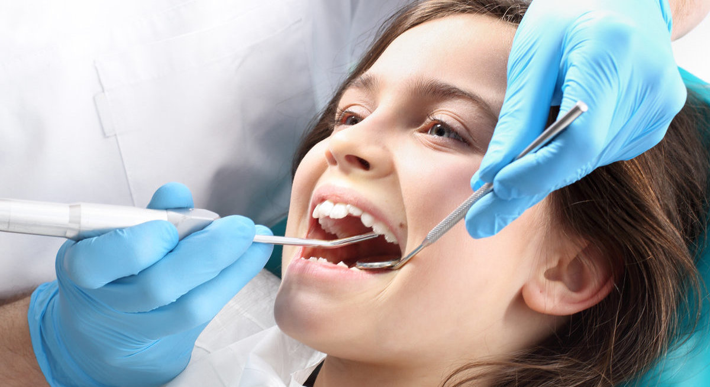

Dental Sealants: Procedure, Benefits, and Care

What Are Dental Sealants?
Dental sealants are thin protective coatings applied on the surface of the teeth to protect them from cavities. While bacteria and plaque build-up can be avoided by maintaining proper oral practices, there’s still a chance of missing trapped food particles and debris at the back of your mouth while brushing.
For this reason, sealants are ideal for protecting the teeth that are highly vulnerable to cavities such as the molars. Sealants are clear in color and blend in well with the teeth. They are virtually unnoticeable when eating or speaking.
Fortunately, the procedure of getting dental sealants is very standard and only takes a few minutes. It’s pain-free and typically completed within one appointment. Please visit your dentist for a dental examination to determine whether you’re a good fit for a dental sealant treatment
How Are Dental Sealants Applied?
If your dentist clears you for dental sealants, here is what you can expect:
- The dentist will prepare the teeth that are to be sealed by cleaning and drying them off.
- The dentist will then apply an acidic solution to the chewing surfaces of the teeth. This makes it easier for the sealant to bond with the teeth effortlessly.
- The dentist will wash off the acidic solution, then rinse and dry off the teeth.
- The dentist then applies the sealant material onto the tooth enamel. It can be done chemically or using a special curing light.
Benefits of Dental Sealants
If you’re not sure why you may need dental sealants, here are five benefits of applying sealants:
- Protective Shield Against Food, Plaque, and Bacteria
The primary reason for applying sealants should be to protect your teeth against disease-causing bacteria and plaque. By covering your teeth, you will prevent plaque and bacteria from building up, potentially leading to cavities and infections.
- Pain-free Treatment
If you suffer from dental anxiety, dental sealants give you a pain-free way to preserve your oral health. Applying sealants is a simple, quick, and painless procedure that doesn’t require surgery. The dentist only needs to clean your teeth and apply the sealant onto the surface. Patients can return to their normal activities right after the treatment.
- Promotes Oral Hygiene
Regardless of how well you brush your teeth, you may not be able to reach into the thin gaps and cracks of the back teeth. This means that food and debris can still get trapped, which could lead to cavities.
Dental sealants diminish the chance of food particles and debris being trapped between your back teeth, thereby promoting your oral health and hygiene. Since dental sealants get damaged with time, schedule regular check-up appointments with your dentist to ensure your sealants are in good condition.
- Reversible and Long-lasting
If you’re worried that you may regret your decision to get sealants, you don’t have to worry. Sealants are a temporary solution and can be removed if it’s necessary. If well cared for, sealants can protect your teeth against tooth decay for as long as 5 to 10 years.
- Easy to Use and Maintain
After the sealants are fitted, you don’t need to do anything special to care for them. You only need to continue with your regular dental hygiene practices. In case a sealant gets damaged, it can be easily repaired at your dentist’s office.
Caring for Your Dental Sealants
After application, dental sealants are very easy to care for and maintain. Just practice good oral hygiene, and you are good to go. These can include:
- Floss and brush your teeth at least twice a day.
- Floss or brush your teeth after consuming acidic and sugary foods and drinks.
- Schedule regular dentist visits for check-ups and professional cleaning.
- Limit the amount of acidic and sweetened foods and drinks.
- Eat healthier and stay hydrated.
- Contact your dentist if the sealant gets cracks or becomes damaged.
- Seek dental care for any dental problem.